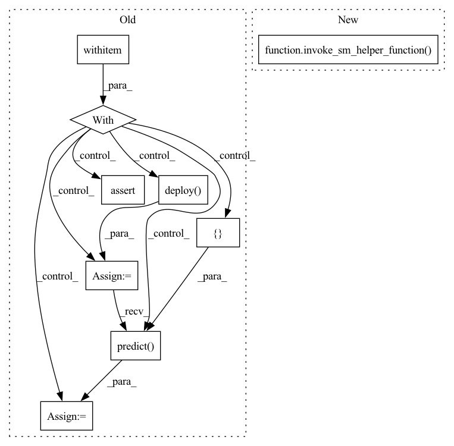

Pattern ID :3327

Before Change
endpoint_name = utils.unique_name_from_base("test-mxnet-ei")
with timeout_and_delete_endpoint_by_name(endpoint_name=endpoint_name,
sagemaker_session=sagemaker_session,
minutes=20):
prefix = "mxnet-serving/default-handlers"
model_data = sagemaker_session.upload_data(path=MODEL_PATH, key_prefix=prefix)
model = MXNetModel(model_data=model_data,
entry_point=entry_point,
role="SageMakerRole",
image_uri=ecr_image,
framework_version=framework_version,
sagemaker_session=sagemaker_session)
predictor = model.deploy(initial_instance_count=1,
instance_type=instance_type,
accelerator_type=accelerator_type,
endpoint_name=endpoint_name)
output = predictor.predict([[1, 2]])
assert [[4.9999918937683105]] == output
After Change
@pytest.mark.skip_if_non_supported_ei_region()
@pytest.mark.skip_if_no_accelerator()
def test_elastic_inference(ecr_image, sagemaker_regions, instance_type, accelerator_type, framework_version):
invoke_sm_helper_function(ecr_image, sagemaker_regions, _test_elastic_inference_function,
instance_type, accelerator_type, framework_version)
def _test_elastic_inference_function(ecr_image, sagemaker_session, instance_type, accelerator_type, framework_version):
entry_point = DEFAULT_SCRIPT_PATH
In pattern: SUPERPATTERN
Frequency: 3
Non-data size: 9
Instances
Fragment ID: 12759170
Project Name: aws/deep-learning-containers
Commit Name: 6e6f05c2bcaee3f8d5469eafb57ca3e6e820ac4a
Time: 2021-10-19
Author: 34056697+SergTogul@users.noreply.github.com
File Name: test/sagemaker_tests/mxnet/inference/integration/sagemaker/test_elastic_inference.py
M Class Name: AnonimousClass
N Class Name: AnonimousClass
M Method Name: test_elastic_inference(5)
N Method Name: test_elastic_inference(5)
M Parent Class:
N Parent Class:
M File Name: test/sagemaker_tests/mxnet/inference/integration/sagemaker/test_elastic_inference.py
N File Name: test/sagemaker_tests/mxnet/inference/integration/sagemaker/test_elastic_inference.py
M Start Line: 51
M End Line: 76
N Start Line: 51
N End Line: 52
'>
Before Change
sagemaker_session=sagemaker_session)
endpoint_name = utils.unique_name_from_base("test-mxnet-serving")
with timeout.timeout_and_delete_endpoint_by_name(endpoint_name, sagemaker_session):
predictor = model.deploy(1, instance_type, endpoint_name=endpoint_name)
output = predictor.predict([[1, 2]])
assert [[4.9999918937683105]] == output
After Change
@pytest.mark.model("linear_regression")
@pytest.mark.skip_neuron_containers
def test_hosting(ecr_image, sagemaker_regions, instance_type, framework_version):
invoke_sm_helper_function(ecr_image, sagemaker_regions, _test_hosting_function,
instance_type, framework_version)
def _test_hosting_function(ecr_image, sagemaker_session, instance_type, framework_version):
prefix = "mxnet-serving/default-handlers"
'>
Fragment ID: 12759177
Project Name: aws/deep-learning-containers
Commit Name: 6e6f05c2bcaee3f8d5469eafb57ca3e6e820ac4a
Time: 2021-10-19
Author: 34056697+SergTogul@users.noreply.github.com
File Name: test/sagemaker_tests/mxnet/inference/integration/sagemaker/test_hosting.py
M Class Name: AnonimousClass
N Class Name: AnonimousClass
M Method Name: test_hosting(4)
N Method Name: test_hosting(4)
M Parent Class:
N Parent Class:
M File Name: test/sagemaker_tests/mxnet/inference/integration/sagemaker/test_hosting.py
N File Name: test/sagemaker_tests/mxnet/inference/integration/sagemaker/test_hosting.py
M Start Line: 33
M End Line: 48
N Start Line: 34
N End Line: 36
'>
Before Change
sagemaker_session=sagemaker_session)
endpoint_name = utils.unique_name_from_base("test-mxnet-gluonnlp")
with timeout.timeout_and_delete_endpoint_by_name(endpoint_name, sagemaker_session):
predictor = model.deploy(1, instance_type, endpoint_name=endpoint_name)
output = predictor.predict(["Positive sentiment", "Negative sentiment"])
assert [1, 0] == output
After Change
@pytest.mark.skip_eia_containers
@pytest.mark.skip_neuron_containers
def test_gluonnlp(ecr_image, sagemaker_regions, instance_type, framework_version):
invoke_sm_helper_function(ecr_image, sagemaker_regions, _test_gluonnlp_function,
instance_type, framework_version)
def _test_gluonnlp_function(ecr_image, sagemaker_session, instance_type, framework_version):
import urllib.request
'>
Fragment ID: 12759161
Project Name: aws/deep-learning-containers
Commit Name: 6e6f05c2bcaee3f8d5469eafb57ca3e6e820ac4a
Time: 2021-10-19
Author: 34056697+SergTogul@users.noreply.github.com
File Name: test/sagemaker_tests/mxnet/inference/integration/sagemaker/test_gluonnlp.py
M Class Name: AnonimousClass
N Class Name: AnonimousClass
M Method Name: test_gluonnlp(4)
N Method Name: test_gluonnlp(4)
M Parent Class:
N Parent Class:
M File Name: test/sagemaker_tests/mxnet/inference/integration/sagemaker/test_gluonnlp.py
N File Name: test/sagemaker_tests/mxnet/inference/integration/sagemaker/test_gluonnlp.py
M Start Line: 34
M End Line: 56
N Start Line: 35
N End Line: 37